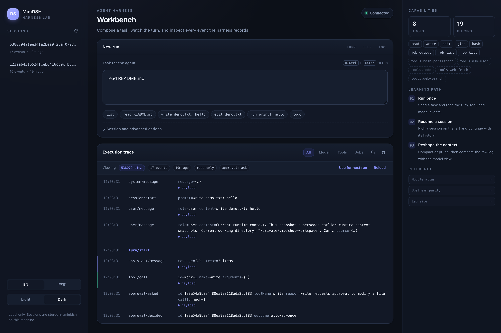

Services, not globals
Everything is a plugin that provides and requires named services. Disable a feature and its service, tool schema, and prompt section all disappear together — no special cases, no dead instructions.
A working agent harness in about 12,000 lines of Python, explained as a textbook: for every mechanism you get the concept, the failure it prevents, how this repository implements it, a command that proves it, and what it costs.
MiniDSH optimizes for the opposite. Three rules make the whole harness inspectable — and make every failure explainable.
Everything is a plugin that provides and requires named services. Disable a feature and its service, tool schema, and prompt section all disappear together — no special cases, no dead instructions.
The session log is append-only and immutable. What the model sees is a derived view that can be compacted, pruned, or replaced. The audit trail never shrinks.
Missing approver, unknown flag, corrupted session, missing preset, oversized payload — every one stops the operation with an explicit error instead of degrading silently.
CLI, HTTP workbench, and Desktop share a single Application. Below it, every capability is a service resolved from the same context. The chapters follow this stack from the bottom up.
run · resume · serve
sessions · surface · stream
HTTP + SSE host
web/index.html workbench
pywebview shell
optional dependency
app.py — the only assembly point
flags → dependency order
activate / deactivate
one provider per name
optional resolution
turn / step / tool call
cancellation · budget
immutable generations
surface · compaction
sandbox policy · approval
observations · seatbelt
jobs · PTY · subagents
workflow · run_code
MCP · skills · presets
schedule · goals
deterministic · offline
EN + 中文 grammar
SSE · thinking replay
retry · images · Files API
Each chapter has the same six blocks, so you can compare mechanisms directly: concept, why it exists, how it is implemented, how to verify it, what it costs, and where it sits in current practice.
The local workbench renders a structured trace: model events, tool calls, approvals, file observations, and job lifecycle — with live streaming text, English/中文 switch, and light/dark themes.


No API key, no network, no third-party packages. The deterministic mock model makes every trajectory reproducible.
# clone and install (stdlib only) git clone https://github.com/NorwinYu/dsh-python-lab.git cd dsh-python-lab && python3 -m venv .venv && . .venv/bin/activate python3 -m pip install -e . # what does the model actually see? minidsh plugins minidsh tools minidsh prompt # run the offline agent minidsh run "read README.md" --trace # widen the policy, then approve the write minidsh --sandbox-mode workspace-write --yes \ run "write demo.txt: hello" # open the workbench minidsh serve --port 3080 # http://127.0.0.1:3080
A lab that hides its limits is a demo. These are stated up front and tracked bullet by bullet in the parity report.
English and Chinese guides, a module atlas, runnable labs, and an honest upstream parity report.